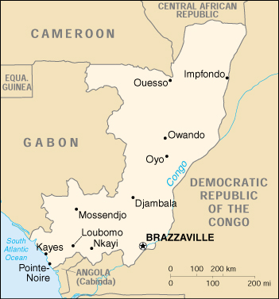

|
Congo, Republic of the | |
| Introduction Geography People Government Economy Communications Transportation Military Transnational Issues | ||
|  | ||
| Congo, Republic of the | Introduction | Top of Page |
| Background: | Upon independence in 1960, the former French region of Middle Congo became the Republic of the Congo. A quarter century of experimentation with Marxism was abandoned in 1990 and a democratically elected government installed in 1992. A brief civil war in 1997 restored former Marxist President SASSOU-NGUESSO. |
| Congo, Republic of the | Geography | Top of Page |
| Location: | Western Africa, bordering the South Atlantic Ocean, between Angola and Gabon |
| Geographic coordinates: | 1 00 S, 15 00 E |
| Map references: | Africa |
| Area: |
total:
342,000 sq km
land: 341,500 sq km water: 500 sq km |
| Area - comparative: | slightly smaller than Montana |
| Land boundaries: |
total:
5,504 km
border countries: Angola 201 km, Cameroon 523 km, Central African Republic 467 km, Democratic Republic of the Congo 2,410 km, Gabon 1,903 km |
| Coastline: | 169 km |
| Maritime claims: | territorial sea: 200 NM |
| Climate: | tropical; rainy season (March to June); dry season (June to October); constantly high temperatures and humidity; particularly enervating climate astride the Equator |
| Terrain: | coastal plain, southern basin, central plateau, northern basin |
| Elevation extremes: |
lowest point:
Atlantic Ocean 0 m
highest point: Mount Berongou 903 m |
| Natural resources: | petroleum, timber, potash, lead, zinc, uranium, copper, phosphates, natural gas, hydropower |
| Land use: |
arable land:
0%
permanent crops: 0% permanent pastures: 29% forests and woodland: 62% other: 9% (1993 est.) |
| Irrigated land: | 10 sq km (1993 est.) |
| Natural hazards: | seasonal flooding |
| Environment - current issues: | air pollution from vehicle emissions; water pollution from the dumping of raw sewage; tap water is not potable; deforestation |
| Environment - international agreements: |
party to:
Biodiversity, Climate Change, Desertification, Endangered Species, Ozone Layer Protection, Tropical Timber 83, Tropical Timber 94, Wetlands
signed, but not ratified: Law of the Sea |
| Geography - note: | about 70% of the population lives in Brazzaville, Pointe-Noire, or along the railroad between them |
| Congo, Republic of the | People | Top of Page |
| Population: |
2,894,336
note: estimates for this country explicitly take into account the effects of excess mortality due to AIDS; this can result in lower life expectancy, higher infant mortality and death rates, lower population and growth rates, and changes in the distribution of population by age and sex than would otherwise be expected (July 2001 est.) |
| Age structure: |
0-14 years:
42.43% (male 618,411; female 609,633)
15-64 years: 54.23% (male 765,501; female 804,125) 65 years and over: 3.34% (male 38,772; female 57,894) (2001 est.) |
| Population growth rate: | 2.2% (2001 est.) |
| Birth rate: | 38.24 births/1,000 population (2001 est.) |
| Death rate: | 16.22 deaths/1,000 population (2001 est.) |
| Net migration rate: | 0 migrant(s)/1,000 population (2001 est.) |
| Sex ratio: |
at birth:
1.03 male(s)/female
under 15 years: 1.01 male(s)/female 15-64 years: 0.95 male(s)/female 65 years and over: 0.67 male(s)/female total population: 0.97 male(s)/female (2001 est.) |
| Infant mortality rate: | 99.73 deaths/1,000 live births (2001 est.) |
| Life expectancy at birth: |
total population:
47.57 years
male: 44.38 years female: 50.85 years (2001 est.) |
| Total fertility rate: | 5 children born/woman (2001 est.) |
| HIV/AIDS - adult prevalence rate: | 6.43% (1999 est.) |
| HIV/AIDS - people living with HIV/AIDS: | 86,000 (1999 est.) |
| HIV/AIDS - deaths: | 8,600 (1999 est.) |
| Nationality: |
noun:
Congolese (singular and plural)
adjective: Congolese or Congo |
| Ethnic groups: | Kongo 48%, Sangha 20%, M'Bochi 12%, Teke 17%, Europeans NA%; note - Europeans estimated at 8,500, mostly French, before the 1997 civil war; may be half that of 1998, following the widespread destruction of foreign businesses in 1997 |
| Religions: | Christian 50%, animist 48%, Muslim 2% |
| Languages: | French (official), Lingala and Monokutuba (lingua franca trade languages), many local languages and dialects (of which Kikongo has the most users) |
| Literacy: |
definition:
age 15 and over can read and write
total population: 74.9% male: 83.1% female: 67.2% (1995 est.) |
| Congo, Republic of the | Government | Top of Page |
| Country name: |
conventional long form:
Republic of the Congo
conventional short form: none local long form: Republique du Congo local short form: none former: Middle Congo, Congo/Brazzaville, Congo |
| Government type: | republic |
| Capital: | Brazzaville |
| Administrative divisions: | 9 regions (regions, singular - region) and 1 commune*; Bouenza, Brazzaville*, Cuvette, Kouilou, Lekoumou, Likouala, Niari, Plateaux, Pool, Sangha |
| Independence: | 15 August 1960 (from France) |
| National holiday: | Independence Day, 15 August (1960) |
| Constitution: | Draft constitution approved by transitional parliament in September 2000 |
| Legal system: | based on French civil law system and customary law |
| Suffrage: | 18 years of age; universal |
| Executive branch: |
chief of state:
President Denis SASSOU-NGUESSO (since 25 October 1997, following the civil war in which he toppled elected president Pascal LISSOUBA); note - the president is both the chief of state and head of government
head of government: President Denis SASSOU-NGUESSO (since 25 October 1997, following the civil war in which he toppled elected president Pascal LISSOUBA); note - the president is both the chief of state and head of government cabinet: Council of Ministers appointed by the president elections: president elected by popular vote for a five-year term; election last held 16 August 1992 (next was to be held 27 July 1997 but will be delayed for several years pending the drafting of a new constitution) election results: Pascal LISSOUBA elected president in 1992; percent of vote - Pascal LISSOUBA 61.3%, Bernard KOLELAS 38.7%; note - LISSOUBA was deposed in 1997, replaced by Denis SASSOU-NGUESSO |
| Legislative branch: |
unicameral National Transitional Council (75 seats, members elected by reconciliation forum of 1,420 delegates on NA January 1998); note - the National Transitional Council replaced the bicameral Parliament
elections: National Transitional Council - last held NA January 1998 (next to be held NA 2001); note - at that election the National Transitional Council is to be replaced by a bicameral assembly election results: National Transitional Council - percent of vote by party - NA%; seats by party - NA |
| Judicial branch: | Supreme Court or Cour Supreme |
| Political parties and leaders: | the most important of the many parties are the Democratic and Patriotic Forces or FDP (an alliance of Convention for Alternative Democracy, Congolese Labor Party or PCT, Liberal Republican Party, National Union for Democracy and Progress, Patriotic Union for the National Reconstruction, and Union for the National Renewal) [Denis SASSOU-NGUESSO, president]; Association for Democracy and Social Progress or RDPS [Jean-Pierre Thystere TCHICAYA, president]; Congolese Movement for Democracy and Integral Development or MCDDI [Michel MAMPOUYA]; Pan-African Union for Social Development or UPADS [Martin MBERI]; Union of Democratic Forces or UFD [Sebastian EBAO] |
| Political pressure groups and leaders: | Congolese Trade Union Congress or CSC; General Union of Congolese Pupils and Students or UGEEC; Revolutionary Union of Congolese Women or URFC; Union of Congolese Socialist Youth or UJSC |
| International organization participation: | ACCT, ACP, AfDB, BDEAC, CCC, CEEAC, CEMAC, ECA, FAO, FZ, G-77, IBRD, ICAO, ICFTU, ICRM, IDA, IFAD, IFC, IFRCS, ILO, IMF, IMO, Intelsat, Interpol, IOC, IOM (observer), ITU, NAM, OAU, OPCW, UN, UNCTAD, UNESCO, UNIDO, UPU, WCL, WFTU, WHO, WIPO, WMO, WToO, WTrO |
| Diplomatic representation in the US: |
chief of mission:
(vacant); Charge d'Affaires ad interim Serge MOMBOULI
chancery: 4891 Colorado Avenue NW, Washington, DC 20011 telephone: [1] (202) 726-5500 FAX: [1] (202) 726-1860 |
| Diplomatic representation from the US: |
chief of mission:
Ambassador David H. KAEUPER
embassy: NA mailing address: NA telephone: [243] (88) 43608 FAX: [243] (88) 41036 note: the embassy is temporarily collocated with the US Embassy in the Democratic Republic of the Congo (US Embassy Kinshasa, 310 Avenue des Aviateurs, Kinshasa) |
| Flag description: | divided diagonally from the lower hoist side by a yellow band; the upper triangle (hoist side) is green and the lower triangle is red; uses the popular pan-African colors of Ethiopia |
| Congo, Republic of the | Economy | Top of Page |
| Economy - overview: | The economy is a mixture of village agriculture and handicrafts, an industrial sector based largely on oil, support services, and a government characterized by budget problems and overstaffing. Oil has supplanted forestry as the mainstay of the economy, providing a major share of government revenues and exports. In the early 1980s, rapidly rising oil revenues enabled the government to finance large-scale development projects with GDP growth averaging 5% annually, one of the highest rates in Africa. Moreover, the government has mortgaged a substantial portion of its oil earnings, contributing to the government's shortage of revenues. The 12 January 1994 devaluation of Franc Zone currencies by 50% resulted in inflation of 61% in 1994, but inflation has subsided since. Economic reform efforts continued with the support of international organizations, notably the World Bank and the IMF. The reform program came to a halt in June 1997 when civil war erupted. Denis SASSOU-NGUESSO, who returned to power when the war ended in October 1997, publicly expressed interest in moving forward on economic reforms and privatization and in renewing cooperation with international financial institutions. However, economic progress was badly hurt by slumping oil prices and the resumption of armed conflict in December 1998, which worsened the Republic of the Congo's budget deficit. Even with the IMF's renewed confidence and high world oil prices, Congo is unlikely to realize growth of more than 5% in 2001-02. With the return to fragile peace, the IMF approved a $14 million credit in November 2000 to aid post-conflict reconstruction. |
| GDP: | purchasing power parity - $3.1 billion (2000 est.) |
| GDP - real growth rate: | 3.8% (2000 est.) |
| GDP - per capita: | purchasing power parity - $1,100 (2000 est.) |
| GDP - composition by sector: |
agriculture:
10%
industry: 48% services: 42% (1999 est.) |
| Population below poverty line: | NA% |
| Household income or consumption by percentage share: |
lowest 10%:
NA%
highest 10%: NA% |
| Inflation rate (consumer prices): | 3.5% (2000 est.) |
| Labor force: | NA |
| Unemployment rate: | NA% |
| Budget: |
revenues:
$870 million
expenditures: $970 million, including capital expenditures of $NA (1997 est.) |
| Industries: | petroleum extraction, cement kilning, lumbering, brewing, sugar milling, palm oil, soap, flour, cigarette making |
| Industrial production growth rate: | NA% |
| Electricity - production: | 302 million kWh (1999) |
| Electricity - production by source: |
fossil fuel:
0.66%
hydro: 99.34% nuclear: 0% other: 0% (1999) |
| Electricity - consumption: | 406.9 million kWh (1999) |
| Electricity - exports: | 0 kWh (1999) |
| Electricity - imports: | 126 million kWh (1999) |
| Agriculture - products: | cassava (tapioca), sugar, rice, corn, peanuts, vegetables, coffee, cocoa; forest products |
| Exports: | $2.6 billion (f.o.b., 2000) |
| Exports - commodities: | petroleum 50%, lumber, plywood, sugar, cocoa, coffee, diamonds |
| Exports - partners: | US 23%, Benelux 14%, Germany, Italy, Taiwan, China (1998) |
| Imports: | $870 million (f.o.b., 2000) |
| Imports - commodities: | petroleum products, capital equipment, construction materials, foodstuffs |
| Imports - partners: | France 23%, US 9%, Belgium 8%, UK 7%, Italy (1997 est.) |
| Debt - external: | $5 billion (1999 est.) |
| Economic aid - recipient: | $159.1 million (1995) |
| Currency: | Communaute Financiere Africaine franc (XAF); note - responsible authority is the Bank of the Central African States |
| Currency code: | XAF |
| Exchange rates: | Communaute Financiere Africaine francs (XAF) per US dollar - 699.21 (January 2001), 711.98 (2000), 615.70 (1999), 589.95 (1998), 583.67 (1997), 511.55 (1996); note - from 1 January 1999, the XAF is pegged to the euro at a rate of 655.957 XAF per euro |
| Fiscal year: | calendar year |
| Congo, Republic of the | Communications | Top of Page |
| Telephones - main lines in use: | 22,000 (1997) |
| Telephones - mobile cellular: | 1,000 (1996) |
| Telephone system: |
general assessment:
services barely adequate for government use; key exchanges are in Brazzaville, Pointe-Noire, and Loubomo; intercity lines frequently out-of-order
domestic: primary network consists of microwave radio relay and coaxial cable international: satellite earth station - 1 Intelsat (Atlantic Ocean) |
| Radio broadcast stations: | AM 1, FM 5, shortwave 1 (1999) |
| Radios: | 341,000 (1997) |
| Television broadcast stations: | 1 (1999) |
| Televisions: | 33,000 (1997) |
| Internet country code: | .cg |
| Internet Service Providers (ISPs): | 1 (2000) |
| Internet users: | 500 (2000) |
| Congo, Republic of the | Transportation | Top of Page |
| Railways: |
total:
894 km
narrow gauge: 894 km 1.067-m gauge (2000) |
| Highways: |
total:
12,800 km
paved: 1,242 km unpaved: 11,558 km (1996) |
| Waterways: |
1,120 km
note: the Congo and Ubangi (Oubangui) rivers provide 1,120 km of commercially navigable water transport; other rivers are used for local traffic only |
| Pipelines: | crude oil 25 km |
| Ports and harbors: | Brazzaville, Impfondo, Ouesso, Oyo, Pointe-Noire |
| Airports: | 33 (2000 est.) |
| Airports - with paved runways: |
total:
4
over 3,047 m: 1 1,524 to 2,437 m: 3 (2000 est.) |
| Airports - with unpaved runways: |
total:
29
1,524 to 2,437 m: 7 914 to 1,523 m: 12 under 914 m: 10 (2000 est.) |
| Congo, Republic of the | Military | Top of Page |
| Military branches: | Army, Air Force, Navy, Gendarmerie |
| Military manpower - military age: | 20 years of age |
| Military manpower - availability: | males age 15-49: 684,922 (2001 est.) |
| Military manpower - fit for military service: | males age 15-49: 347,946 (2001 est.) |
| Military manpower - reaching military age annually: | males: 32,350 (2001 est.) |
| Military expenditures - dollar figure: | $110 million (FY93) |
| Military expenditures - percent of GDP: | 3.8% (FY93) |
| Congo, Republic of the | Transnational Issues | Top of Page |
| Disputes - international: | most of the Congo river boundary with the Democratic Republic of the Congo is indefinite (no agreement has been reached on the division of the river or its islands, except in the Stanley Pool/Pool Malebo area) |
{kind=link}
{kind=link}